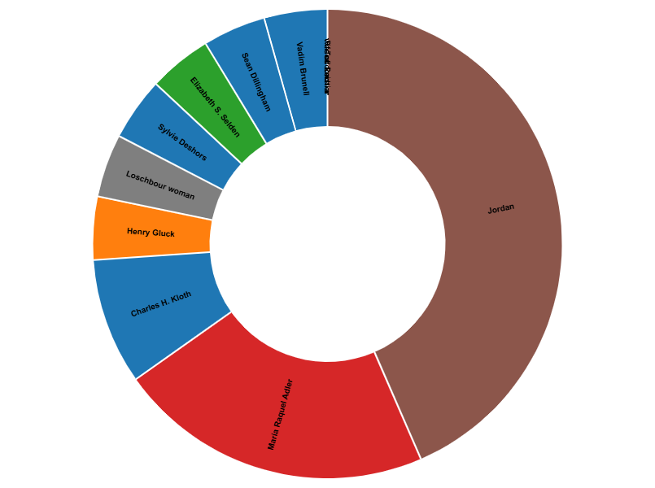
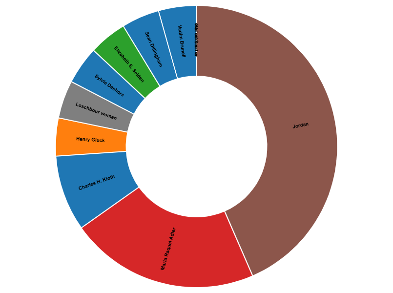

Requête Wikidata
Vous pouvez consulter cette requête directement sur le site Wikidata : Voir la requête en ligne
Vous pouvez également consulter l'image de la visualisation ici : Voir l'image 
Vous pouvez consulter cette requête directement sur le site Wikidata : Voir la requête en ligne
Vous pouvez également consulter l'image de la visualisation ici : Voir l'image 